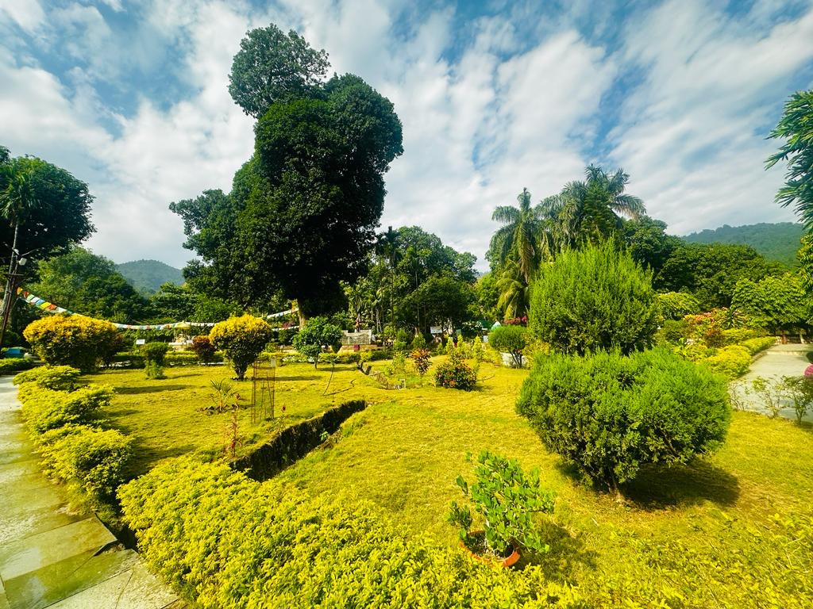
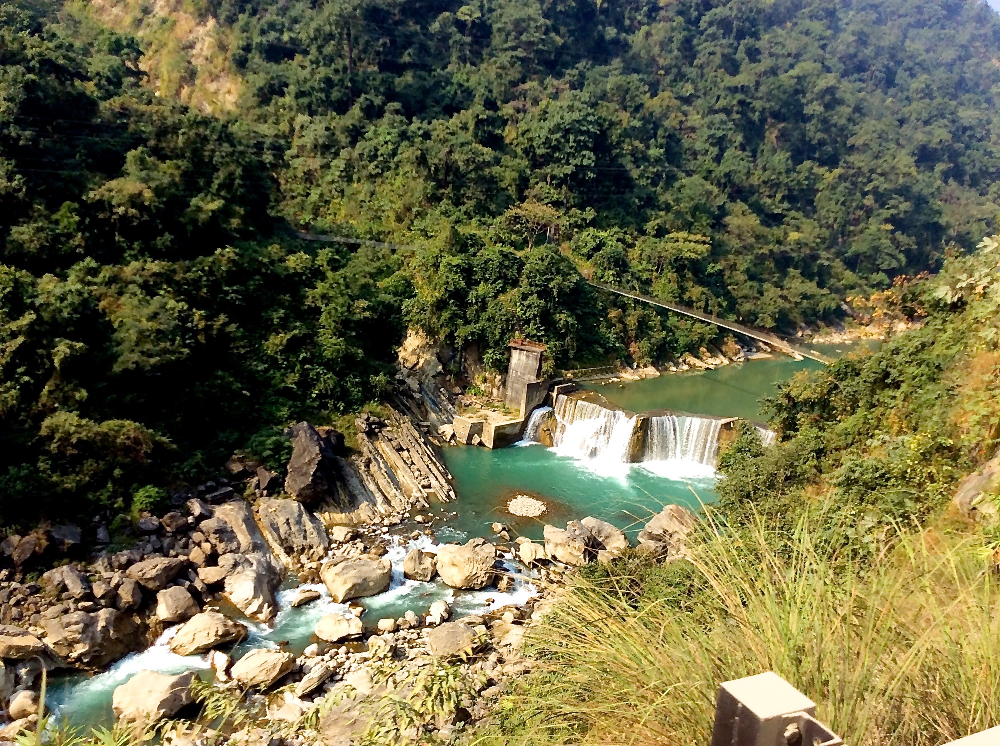

Local Attractions of Butwal
Siddhababa TempleSiddhababa Temple is a well-known religious site located in Butwal. It is dedicated to Siddhababa, a revered spiritual figure believed to have great powers and blessings. The temple attracts many devotees from the local community and surrounding areas, especially during important festivals and religious ceremonies. People visit Siddhababa Temple to pray for health, prosperity, and protection from difficulties. The temple’s peaceful atmosphere and spiritual significance make it an important place for worship and community gatherings in Butwal. |

|
|  |
Manimukunda Sen Park (Fulbari)Manimukunda Sen Park in Butwal is a popular green space named after the historic King Manimukunda Sen. It offers peaceful gardens, walking paths, and seating areas where people relax and spend time with family and friends. The park also hosts community events and cultural programs, making it an important place for social gatherings. It provides a refreshing break from the city’s busy life with its natural beauty and calm atmosphere. |
Tinau River ViewpointThe Tinau River Viewpoint in Butwal offers a beautiful spot to enjoy scenic views of the Tinau River and the surrounding landscape. It is a peaceful place where visitors can relax, take photos, and appreciate nature’s beauty. The viewpoint is popular among locals and tourists alike, providing a quiet escape from the city and a chance to connect with the natural environment nearby. |
 |